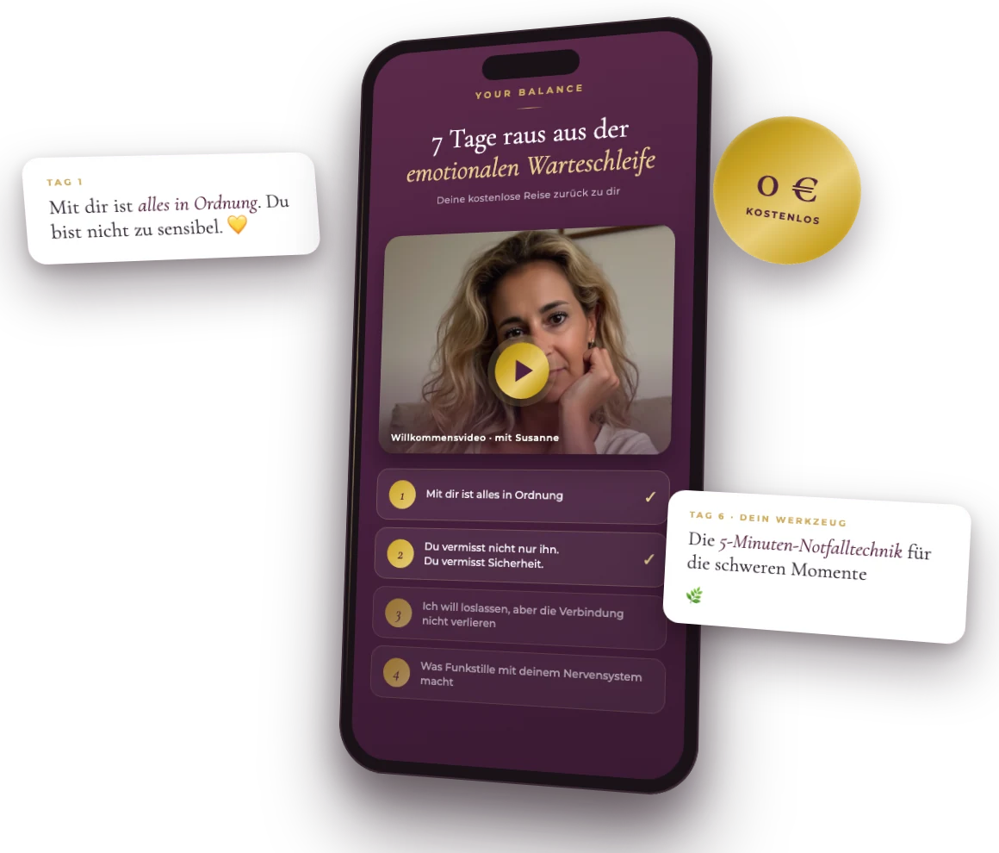

7 Tage, die dich zurück zu dir bringen — wenn du emotional an einer Verbindung festhängst, ständig auf eine Nachricht wartest und dich selbst dabei verlierst.
0 € · kein Abo, keine versteckten Kosten · kein Warenkorb — nur Vorname und E-Mail

✔ Für Frauen nach einer Trennung, in On-Off-Beziehungen oder in Verbindungen, die mehr Kraft nehmen als geben
✔ Kein „Vergiss ihn"-Ratgeber — sondern echte Nervensystem-Arbeit und Selbstmitgefühl
✔ Keine Therapie — eine liebevolle Begleitung für deinen Alltag
Dann bist du in dem gelandet, was ich die emotionale Warteschleife nenne: Dein Leben läuft auf Standby, während deine Gedanken um einen Menschen kreisen.
Und das Wichtigste zuerst: Mit dir ist alles in Ordnung. Du bist nicht zu sensibel. Du bist nicht schwach. Und du bist nicht allein.
Der Tag, an dem du aufhörst, dich für dein Fühlen zu verurteilen.
Warum dein Nervensystem Halt sucht — und wie du ihn dir selbst gibst.
Der innere Konflikt, der dich zerreißt — und seine sanfte Auflösung.
Warum sein Schweigen deinen ganzen Körper in Alarm versetzt.
Das Muster erkennen, das dich festhält — und seinen Ausgang finden.
Dein Werkzeug für die Momente, in denen alles kippt.
Der Blick dreht sich: von seinem Schweigen zu deinem Leben.
Jeden Tag ein kurzes Video, eine kleine Übung — und ein Stück mehr du.
Meine 7 Tage kostenlos starten0 € · nur Vorname und E-Mail
„Diese Reise soll dir nicht helfen, jemanden zu vergessen —
sondern dich selbst wiederzufinden."
Sein Verhalten zu erklären ist nicht dasselbe,
wie es zu entschuldigen.
Und keines von beidem ist ein Grund zu warten.
Genau diese Klarheit — liebevoll statt hart — bekommst du in deinen 7 Tagen.
„Die Videos, der Leitfaden und die Übungen sind super gemacht und zusammengestellt — dank deiner authentischen Art."
A. · Teilnehmerin der TestrundeIch bin Susanne — und ich weiß, wie es sich anfühlt, wenn der eigene Tag an einer Nachricht hängt, die nicht kommt. Ich habe selbst erlebt, wie viel Leben in dieser Warteschleife verloren geht.
Heute begleite ich seit Jahren Frauen, die in emotional intensiven Verbindungen feststecken — mit einem Ansatz, der nicht auf Härte setzt, sondern auf dein Nervensystem, dein Tempo und deine Würde.
Ja. 0 €, kein Abo, nichts Verstecktes — du trägst nur Vorname und E-Mail ein. Du bekommst Zugang zu allen 7 Tagen, dem Leitfaden und den Übungen — und der Zugang bleibt für dich geöffnet.
Nach dem Eintragen bestätigst du kurz deine E-Mail-Adresse (ein Klick — damit weiß ich, dass die Adresse wirklich dir gehört). Direkt danach bekommst du deine Willkommens-Mail mit deinem persönlichen Zugangs-Button zu deinem Kursbereich.
Wenige Minuten. Jeder Tag besteht aus einem kurzen Video und einer kleinen, alltagstauglichen Übung. Und wenn du einen Tag auslässt: Alles wartet auf dich — du gehst in deinem Tempo.
Sie ist für dich, wenn du emotional an einer Verbindung festhängst und zurück zu dir finden möchtest. Sie ersetzt keine Therapie — wenn du dich in einer akuten Krise befindest, hol dir bitte zusätzlich professionelle Unterstützung.
Ganz ehrlich: Nach deiner Reise lade ich dich zu meinem kostenlosen Live-Abend „Warum komme ich nicht von ihm los?" ein — dort gehen wir gemeinsam tiefer. Ob du dabei sein möchtest, entscheidest allein du. Die 7 Tage stehen für sich und sind vollständig.
Schenk dir 7 Tage — und finde zurück zu dir.
Kostenlos · kein Abo · kein Warenkorb